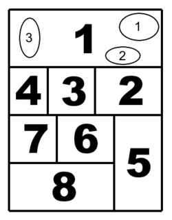

A manga (漫画)
A képregény japán nyelvű általános elnevezése, Japánon kívül a japán mangák jellemző stílusában készített képregényekre használják, szűkebben csak a Japánban készültekre. Alkotóit mangakáknak hívják.
| Hogyan kell olvasni? | ||
|---|---|---|
| A japán írás jobbról balra halad, a mangák is ilyen formában olvasandóak. Ez a nyugati terjesztésnél nehézségekkel járhat, mivel ez elsőre szokatlan az európai és az amerikai olvasóközönségnek. Erre egyik megoldás a lapok tükrözése, de ez olyan problémákat okozhat mint hogy a szereplők így rossz oldalukon hordják a kardjukat, és az eredeti szerzők elképzelése is sérülhet – sokan ezért nem is járultak hozzá munkáik ilyen módosításához. Ezen okokból a mangák más nyelvű változatainak többsége eredeti formájában jelenik meg, mint Magyarországon is. |  | |